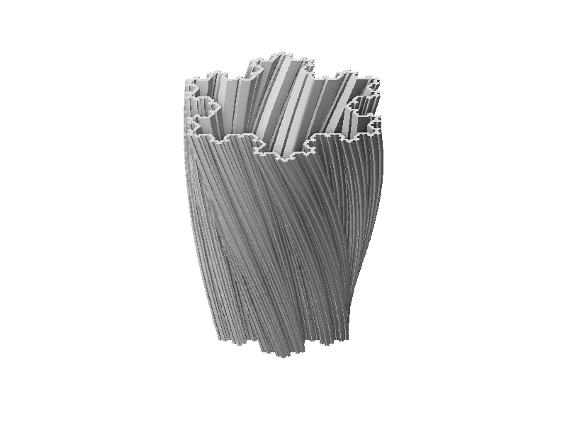
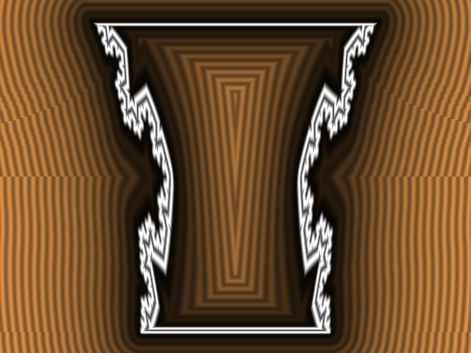

vase-koch
Drafted with AI, not yet reviewed
by Reivases/koch-snowflake.scadPrintables
Vase on a Koch snowflake, widening and turning as it rises; ported from OpenSCAD, where the outline is 518 triangles, extruded in 500 slices.
Each level of the snowflake puts a triangle a third the size on the middle of every edge of the level before. The OpenSCAD design places them with nested loops over six directions; here the plane is folded into one of twelve mirror-image wedges at each level, so a level costs one triangle and one fold, whatever the count.
The OpenSCAD design is a solid, to print in vase mode; here WALL hollows it, to print as it is.


Files
Source
// SPDX-License-Identifier: 0BSD // // Vase on a Koch snowflake, widening and turning as it rises; ported from // OpenSCAD, where the outline is 518 triangles, extruded in 500 slices. // // Each level of the snowflake puts a triangle a third the size on the // middle of every edge of the level before. The OpenSCAD design places // them with nested loops over six directions; here the plane is folded // into one of twelve mirror-image wedges at each level, so a level costs // one triangle and one fold, whatever the count. // // The OpenSCAD design is a solid, to print in vase mode; here WALL hollows // it, to print as it is. // --- Parameters --- const RADIUS = 30.0; // the snowflake's points, at the foot const HEIGHT = 100.0; const WIDEN = 1.5; // scale at the rim const TURN = 60.0; // degrees the outline turns, clockwise looking down const LEVELS = 3; // levels of triangles on the first star const WALL = 1.2; // 0 for a solid, to print in vase mode // --- Snowflake --- /// Six copies of `shape` around the origin, 60 degrees apart, for a shape /// on +X that is symmetric about it. /// /// repeat_polar(6) without its trigonometry: mirrors across both axes and /// the lines at 60 and 30 degrees fold the plane into the wedge from 0 to /// 30 degrees. The copies must stay in their wedges, as for repeat_polar. fn six(shape) { let c = sqrt(3.0) / 2.0; let px = abs(x); let py = abs(y); let d = min(c * px - 0.5 * py, 0.0); let px = px - 2.0 * c * d; let py = py + d; let d = min(0.5 * px - c * py, 0.0); remap(shape, px - d, py + 2.0 * c * d, z) } /// Equilateral triangle of circumradius `r`, a corner on -X. /// /// Exact; Inigo Quilez's, folded by a mirror where regular_polygon(3, r) /// takes an angle. On the outline, where the length is 0 and has no /// gradient for the mesher, `or` takes the edge's line, -qy, instead. fn triangle(r) { let k = sqrt(3.0); let h = r * k / 2.0; let px = abs(y) - h; let py = r * 0.5 - x; let d = max((px + k * py) * 0.5, 0.0); let qx = px - d; let qy = py - k * d; or(hypot(qx - clamp(qx, -2.0 * h, 0.0), qy) * compare(0.0, qy), -qy) } /// The triangles of one level, `size` their circumradius, pointing back /// at the origin, with the levels below on their edges. fn bumps(size, levels) { if levels == 0 { triangle(size) } else { min(triangle(size), six(bumps(size / 3.0, levels - 1).move([size * 2.0 / 3.0, 0]))) } } // The first star is two triangles, a hexagram; every point of it gets the // next level's triangle two thirds of the way out. let snowflake = min( star(6, [RADIUS, RADIUS / sqrt(3.0)]), six(bumps(RADIUS / 3.0, LEVELS - 1).move([RADIUS * 2.0 / 3.0, 0])), ); // --- Vase --- // OpenSCAD's linear_extrude(scale = WIDEN, twist = TURN), whose twist turns // clockwise. The cylinder around it changes no value, but tells interval // arithmetic where the vase ends, which a turning profile hides. let vase = loft([ #{z: 0.0, shape: snowflake}, #{z: HEIGHT, scale: WIDEN, angle: -TURN}, ]); let vase = max(vase, hypot(x, y) - RADIUS * WIDEN); let model = if WALL > 0.0 { vase.shell(WALL).intersection(z - (HEIGHT - WALL)) } else { vase }; bounds([-47, -47, -1], [47, 47, HEIGHT + 1]); resolution(5); draw(model);